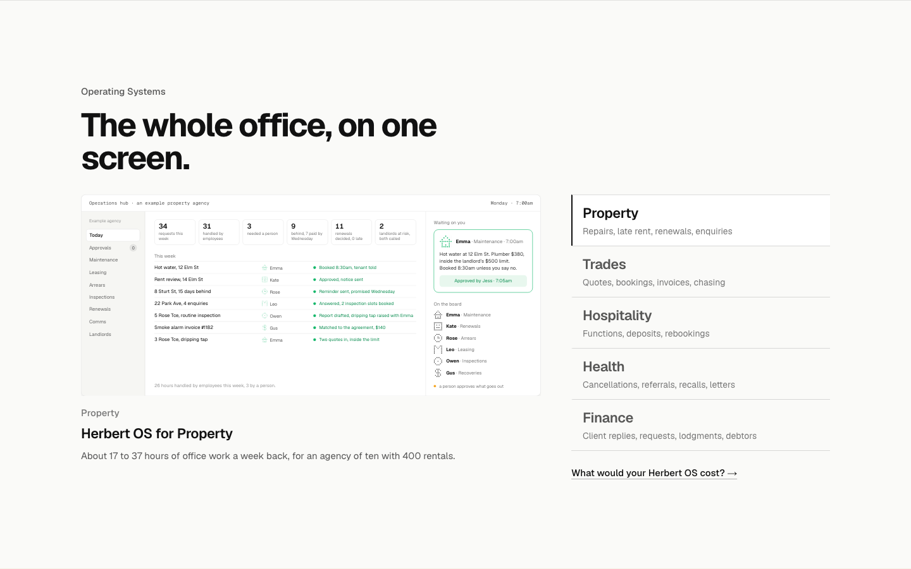
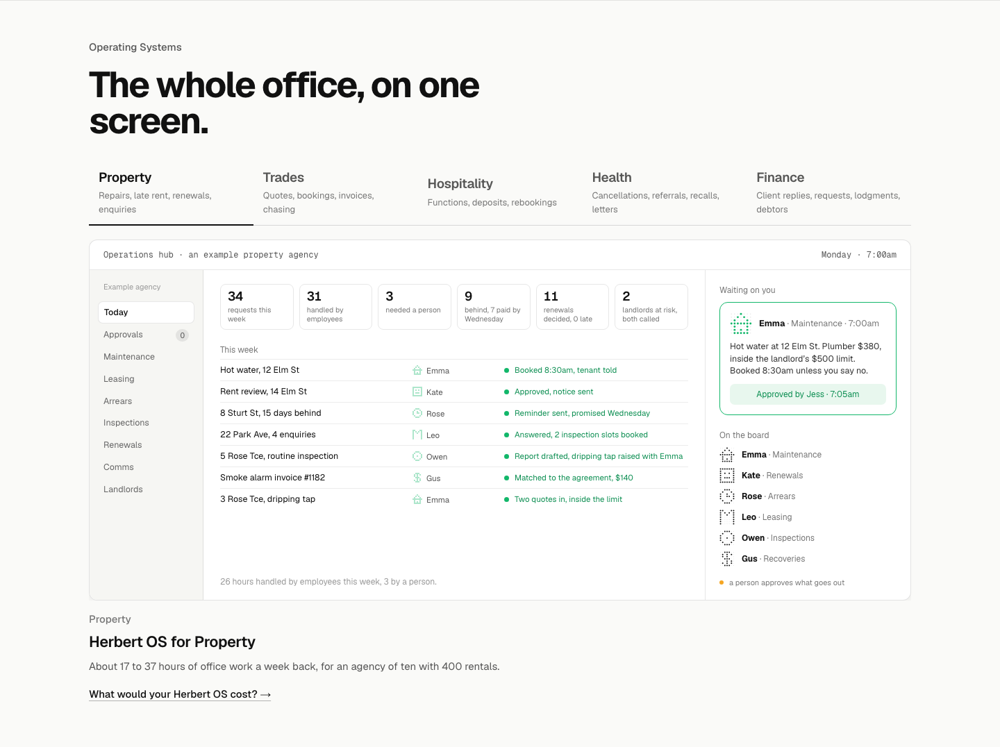
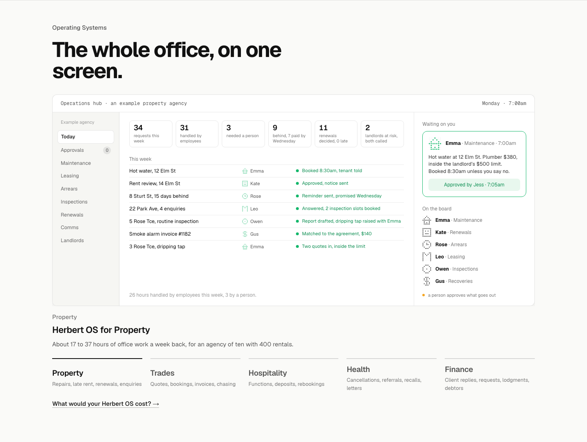
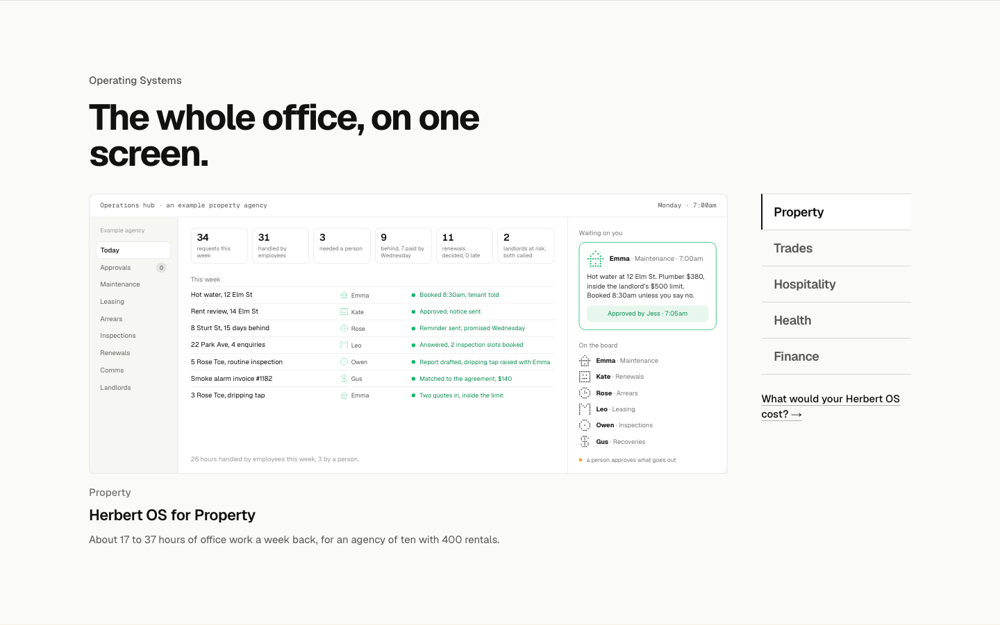
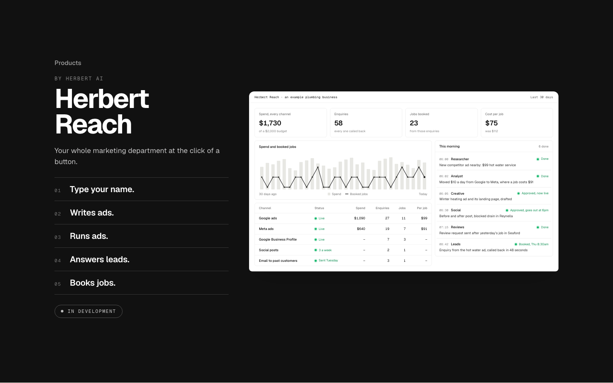
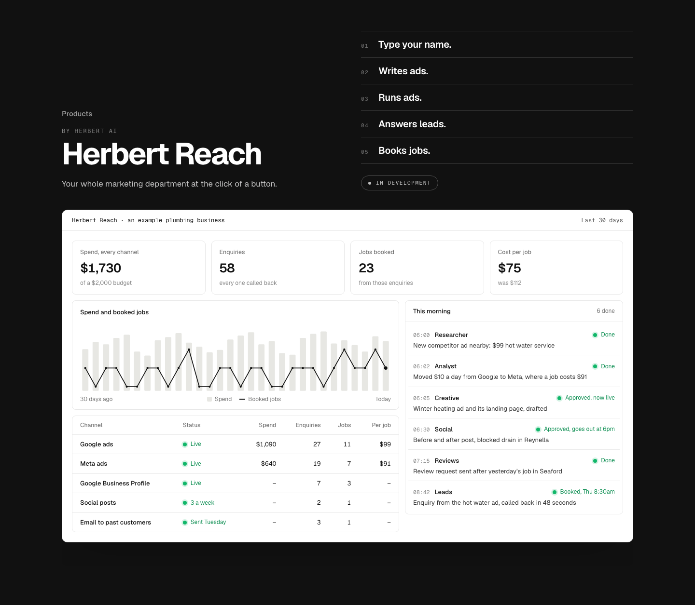
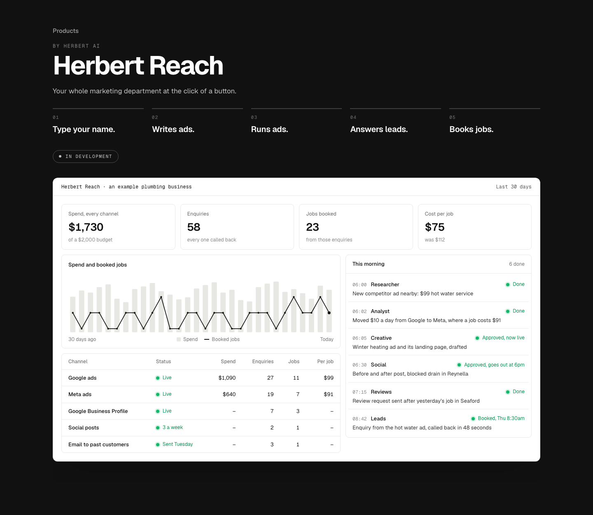
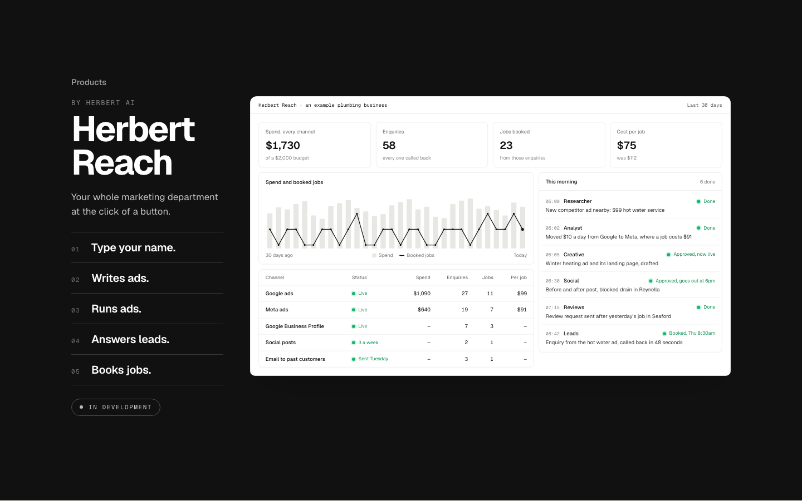

The system screens at full size
Critique fix 1. Today both screens are shrunk to 61%, with text at 7 to 8px. Each option is the real section with its elements moved, at 1440x900.
Operating Systems
TodayThe screen in a column at 61%, its text 7.4px; the industries listed beside it.

1. Tabs above, the screen full widthThe industries become tabs across the top and the screen runs the full width at its real size: text 12 to 13px, like an app window with its own tabs. Recommended.

2. The screen full width, the industries under itThe screen first at full size, the five industries in a row beneath it like a caption you pick from. The screen leads; choosing an industry comes after seeing one.

3. Two columns, a wider screenThe smallest change: the list narrows to names only and the screen widens. Text reaches about 9px, still under a readable size.

Herbert Reach
TodayThe story beside the dashboard at 61%, its text 8px.

1. The name and story on top, the dashboard full widthThe name and your line on the left, the story on the right, and the dashboard under them at its real size. Every number on it can be read. Recommended.

2. The story as a row, the dashboard full widthThe five steps run left to right above the dashboard, so the story reads like the product's own progress bar.

3. Two columns, a wider dashboardThe smallest change: the story column narrows and the dashboard widens. Text reaches about 9px, still under a readable size.
